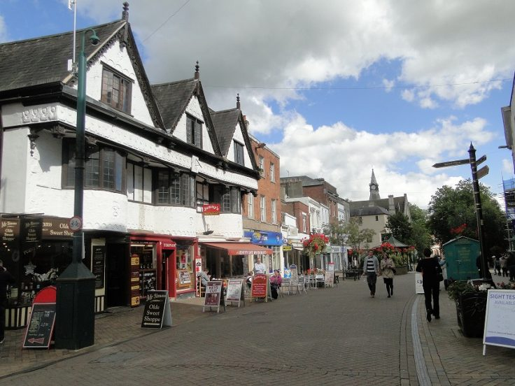

Where is Tim Quinlan now?
Tim Quinlan now resides in Chicago, IL, but still visits Miami and Indianapolis regularly.
Where will Tim Quinlan be heading next?
Upon completion of his coding and web development bootcamp, Tim Quinlan has quite a few options to consider regarding his next move. His favorite options can be found in bold.
- Miami, Florida
- Banbury, Oxfordshire, United Kingdon 
- San Diego, California
- Seattle, Washington
- Amsterdam, Netherlands


Which city would you choose?
Tim Quinlan may end up staying Chicago upon completion of his bootcamp. Should he stay put, there are some goals he'd like to see to completion.
- Buying a single family home.
- Finding renters for the condo he currently lives in.
- Buying more property to serve as rentals.
- Slowly buy up the entire city of Chicago.
- Legally change his name to Mr. Moneybags.
- Purchase a monacle.
What will happen when Tim Quinlan is no longer with us?
When Tim Quinlan passes he will be cremated and his ashes will reside inside the United Center alongside the six NBA Championship trophies won by the 1990's Chicago Bulls.
(Table of Contents)